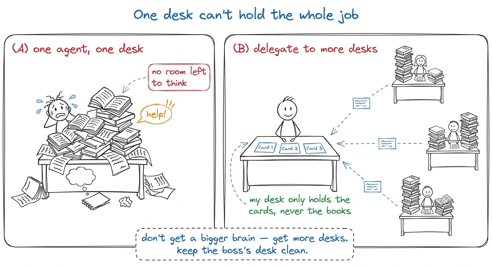
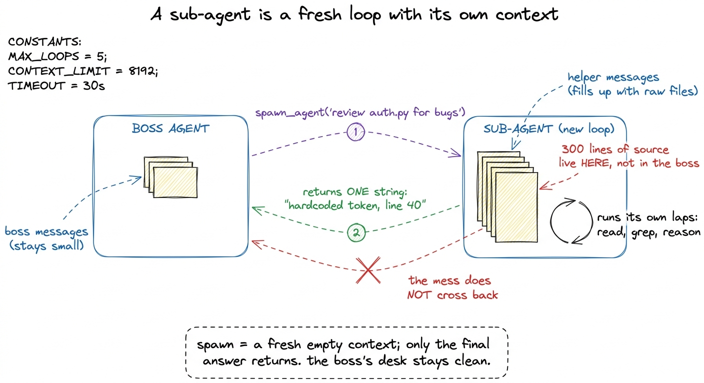
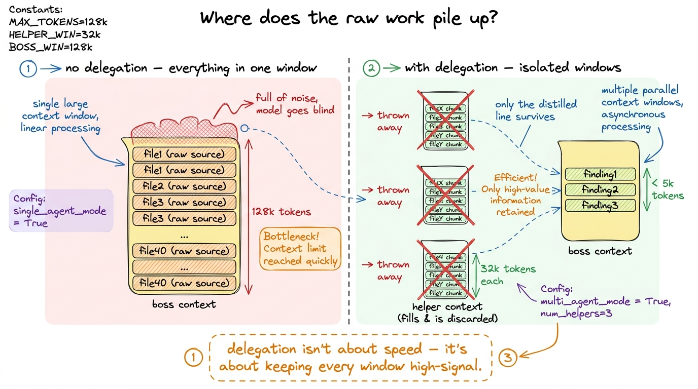
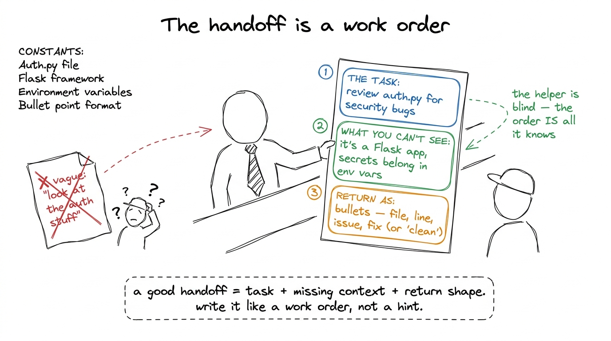
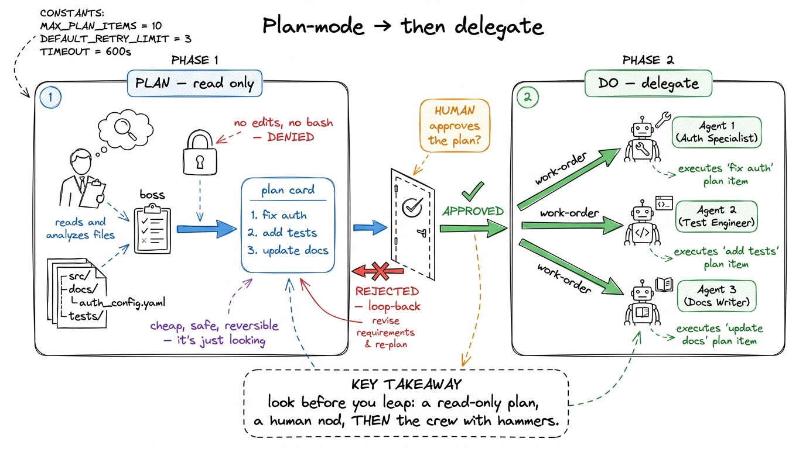
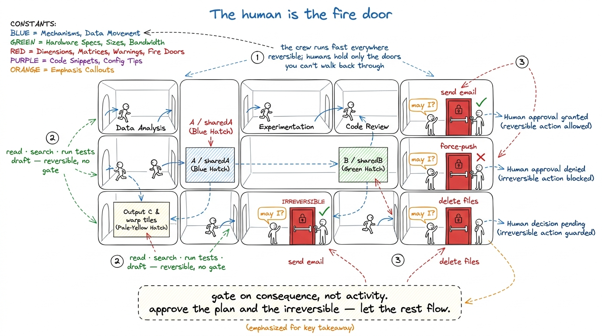

Teaching sub-agents & orchestration
By the end of this chapter you can stand at a whiteboard and teach the whole idea of sub-agents and orchestration — so clearly that a student who has only ever run one agent loop suddenly sees why a big job needs a team of loops, how a boss agent spawns a focused helper, gets one clean answer back, and never lets the helper's mess into its own head. This is a Layer-5 idea — the top of the stack, the part that turns one tireless worker into a small, coordinated crew. You build it the way you'll build it for the room: with a delegation story, a save-point, and a fire door, until "orchestration" stops sounding grand and starts sounding obvious.
The one idea to leave the room with, and to keep repeating: a sub-agent is a fresh, empty context you rent for one job — and you only keep its answer, not its scratch paper. Say it early. Say it again when it clicks. Everything else in this chapter is a consequence of that single sentence.
Start with the pain: one context can not hold the whole job
Before we say "sub-agent," we say the problem out loud. You already taught the students that the message list is the agent's memory, and that the context window is a fixed box. Now put those two facts together and feel the squeeze. A real task — "audit this whole repo for security bugs" — means reading forty files. Each file dumps thousands of tokens into the one box. Ten files in, the box is full of raw source code, and the agent has no room left to think about what it found.

figure rendering · The core pain and its fix: one desk buries the worker in raw material;What a sub-agent actually is: a rented loop with an empty head
Now the plain mechanism, and it is smaller than the word "orchestration" makes it sound. A sub-agent is just another run of the exact same agent loop you already built — the same while loop, the same tools, the same model. The only difference is that it starts with a fresh, empty message list. It knows nothing about the boss's conversation. You hand it one instruction, it does its own laps, and when it finishes it hands back one thing: its final answer, as a plain string.
That "fresh, empty message list" is the whole trick. The helper's forty files of raw source code pile up in the helper's context, not the boss's. When the helper is done, all that raw material evaporates along with the helper. Only the answer — one tidy paragraph — crosses back.
[user: "audit the repo", assistant: "I'll spawn a helper to check auth.py", tool_result: "auth.py has a hardcoded token on line 40"]. The HELPER's list (its own private notepad): [user: "review auth.py for security bugs", assistant: "read_file auth.py", tool_result: "<300 lines of source>", assistant: "found it: hardcoded token line 40"]. Point at the 300 lines of source. "See where the heavy stuff lives? In the helper's list. The boss only ever sees the one-line verdict. The helper read the whole file so the boss didn't have to."
figure rendering · Spawning a sub-agent runs a whole second loop with its own private conHere is the whole mechanism in code, and notice how little there is to it. A sub-agent is a tool the boss can call, and that tool just runs the agent loop again with a clean slate.
def spawn_agent(instruction: str) -> str:
# a brand-new, EMPTY message list — the helper knows nothing else
sub_messages = [{"role": "user", "content": instruction}]
result = run_agent_loop(sub_messages, TOOLS) # the SAME loop from Layer 1
return result # just the final string
TOOLS = [..., {
"name": "spawn_agent",
"description": "Delegate a focused sub-task to a fresh helper agent. "
"Returns only its final answer.",
"input_schema": {"instruction": "string"},
}]spawn_agent, which runs a loop, which could itself call spawn_agent. Same ten lines, all the way down. When that lands, the whole idea deflates from intimidating to obvious.Why the empty head is the point, not a detail
Spend real time here, because this is where the value lives. Students will assume the win is "more workers, more speed." The deeper win is context isolation — every helper gets a clean, focused window, so no helper is ever distracted or crowded by work that isn't theirs.
Think about what the boss's context looks like with and without delegation. Without it: forty files jammed into one window, the model half-blind by file thirty. With it: the boss holds forty crisp one-line findings, each produced by a helper who saw exactly one file with total focus. Same total work done — but the attention was never diluted. This is the same lesson as context budgets, one level up: the cheapest way to keep a window high-signal is to never let low-signal tokens into it in the first place.
Task tool) work, and how Anthropic's own research system runs. Anthropic's "how we built a multi-agent research system" describes a lead agent that spawns parallel sub-agents, each with its own context window, to explore different angles at once — precisely so the lead's window stays clean. pi (the harness this workshop rebuilds) spawns sub-agents for focused sub-tasks the same way. When a coding agent says "I'll dispatch an agent to investigate the test failures," that's this — a fresh loop, a private context, one answer back. It's not a demo trick; it's how the serious agents stay coherent on big jobs.
figure rendering · With no delegation, all raw material crowds one window; with delegatioThe handoff is a contract: write the instruction like a work order
Because the helper starts blind, the quality of the whole thing rides on the instruction you hand it. This is the handoff, and it's a real skill to teach. A vague handoff — "look at the auth stuff" — makes the helper guess, wander, and hand back mush. A crisp handoff reads like a work order: what to do, what context it needs, and what shape the answer should come back in.
auth.py for security vulnerabilities." (2) The context it can't see — because the helper is blind. "This is a Flask app; secrets should come from env vars, not literals." (3) The return shape — so the answer comes back tidy. "Reply with a bulleted list: file, line, issue, one-line fix. If none, reply 'clean.'" Show a vague handoff and a work-order handoff side by side, then run both live and let the room watch the vague one flail. The contrast teaches it faster than any rule.
figure rendering · The handoff taught as a three-field work order — task, the context theThis is why the handoff is a contract, exactly like a tool schema was a contract. The boss and helper never share a mind; they only share the strings that cross the boundary. Get those strings sharp and the crew is coherent. Get them mushy and you've just built forty confused temp workers.
Plan-mode: think first, then delegate the doing
There's a natural partner to delegation, and it's worth teaching in the same breath: plan-mode. Before spawning a crew, a smart boss first spends a cheap, read-only phase figuring out what the crew should even do. No files edited, no commands run — just look around, form a plan, and (often) show that plan to the human before any real work begins.
Mechanically, plan-mode is one of the approval modes you already met at the permission gate: a mode where every mutating action is denied, so the agent can only read, search, and reason. It produces a plan as its output. The boss then turns each line of that plan into a work order for a sub-agent. Think first, in a read-only phase; then delegate the doing, one work order at a time.

figure rendering · Plan-mode is a read-only thinking phase that produces a plan; a humanThe human-in-the-loop gate: the fire door on the whole crew
Now the safety piece, and it's the natural top of the whole stack. When one agent could rm -rf, you put a permission gate in front of its tools. When a boss agent can spawn a crew of agents, each with their own tools, the stakes multiply — so you keep a human-in-the-loop gate at the moments that matter: approving the plan, and approving any irreversible action a helper wants to take. The human isn't watching every keystroke; they're standing at the few doors that lead somewhere you can't come back from.
The design rule you teach is the same one from the permission gate, lifted to the crew: gate on consequence, not on activity. Don't make the human approve every file read a helper does — that trains them to rubber-stamp. Make them approve the plan (one decision, high leverage) and the irreversible actions (few, but they matter). Everything reversible flows without a prompt.

figure rendering · The human-in-the-loop gate as a set of fire doors: reversible work floSave-points: why the crew needs durability underneath
One quiet dependency to name, because it ties orchestration back to the durability layer. A crew of agents running for twenty minutes is a lot of work in flight. If the process crashes mid-job — or the human walks away at the fire door and comes back an hour later — you do not want to lose everything. So orchestration leans on save-points: the boss's state (its plan, which helpers have returned, which are still out) is written down durably, so the whole crew can be paused, resumed, or recovered.
The morning lecture plan (7:00–9:00 AM IST)
Two hours, three blocks. One live BUILD per block. Resist rushing the metaphors — the whole chapter lives or dies on the "empty head" landing.
Block 1 — the pain and the fresh context (7:00–7:40). Open cold with the buried-desk metaphor: one agent, one overfull window (7:00–7:12). Then reveal the sub-agent as "the same loop, empty message list," with the two-notepad board picture (7:12–7:28). Live build: take a task that reads several files in one agent and watch its context balloon; print the token count climbing (7:28–7:38). Checkpoint question: "If one agent reads ten big files to answer, what's wrong with its context by file ten?" (Answer: it's full of raw source with no room left to reason.)
Block 2 — spawn, isolate, hand off (7:40–8:25). Show spawn_agent as a tool that runs the loop again with an empty list; land the "orchestration is recursion" aha (7:40–7:58). Then teach the handoff as a three-field work order, vague vs. crisp (7:58–8:12). Live build: wire spawn_agent, give the boss "audit these three files," and print BOTH the boss's tiny context and a helper's fat one side by side — show the raw source lives only in the helper (8:12–8:25). Checkpoint question: "Does the sub-agent remember the boss's conversation?" (Answer: no — empty head; it knows only the instruction string.)
Block 3 — plan-mode + the human gate (8:25–9:00). Contractor-with-clipboard metaphor for plan-mode; read-only thinking, then delegate (8:25–8:42). Then the fire-door metaphor for the human-in-the-loop gate; gate on consequence, not activity (8:42–8:55). Close by tying in save-points in one line — the gate is affordable because the state is durable (8:55–9:00). Checkpoint question: "How many things does the human actually approve in a well-designed run?" (Answer: about two — the plan and the irreversible step — not every action.)
spawn_agent — three helpers, and print the boss's context staying tiny while each helper's context (briefly) balloons and is thrown away. Same task, same answer, wildly different boss-context size. That side-by-side — a bloated single context next to a lean orchestrated one — is the entire chapter in thirty seconds of terminal. Rehearse it until the numbers land on cue.1 Two nuances worth a sidenote if the room is sharp. First, sub-agents can run in parallel — the boss can spawn three helpers at once and wait for all three — which is where the speed win comes from on top of the context win. Second, delegation has a cost: each helper is a full extra model run, so you don't spawn one for a task the boss could do in a single lap. The rule of thumb is delegate when the sub-task is self-contained and context-heavy — lots of reading, one clean answer — and keep it inline when it's small.
You can now teach
- Why one context can't hold a big job — the buried-desk pain — and why the fix is more desks, not a bigger brain.
- What a sub-agent actually is: the same agent loop run again with a fresh, empty message list, exposed as a
spawn_agenttool — orchestration as recursion. - Context isolation as the real win: the helper's raw work stays in the helper's window and is discarded; only the distilled answer crosses back, keeping every window high-signal.
- The handoff as a work order — task, the context the blind helper can't see, and the return shape — and why crisp handoffs make a coherent crew.
- Plan-mode: a cheap read-only thinking phase that produces a plan a human approves before any real work begins (contractor with a clipboard).
- The human-in-the-loop gate as a fire door — gate on consequence not activity, approve the plan and the irreversible few — and how save-points make that gate affordable.
- The full 7:00–9:00 AM lecture: three blocks, one live build each, checkpoint questions, and the bloated-vs-lean context demo that lands the whole idea.